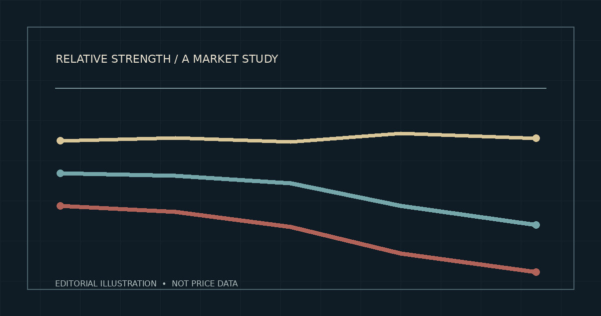

Bitcoin’s Quiet Lead in a Weak Crypto Market
Ether and Solana fell further, while Bitcoin’s own trend deteriorated. Relative strength, it turns out, is not the same thing as a healthy market.

There is a particular kind of market weakness that hides behind a leaderboard. Bitcoin can outperform its peers, appear comparatively resilient and still be in a declining trend. That was the uncomfortable combination in the crypto data through November 1, 2026: Bitcoin held up better than Ether and Solana, yet its own daily moving averages and momentum measures offered little evidence of a durable recovery.
My central reading is not that Bitcoin was strong in an absolute sense. It is that weakness was unevenly distributed. In a market where the major assets often move together, the difference between losing less and actually gaining ground matters. It says something about relative performance; it says much less about where prices go next.
One market, three different outcomes
Over a 60-return comparison ending November 1, Bitcoin gained 1.20% from its September 2 closing price. Ether lost 5.11%; Solana lost 5.99%. That makes Bitcoin the clear winner of this particular comparison, but it is a narrow claim: a ranking within a specified window, not a general law about which asset is safer.
Sixty daily returns, three outcomes
| Asset | Cumulative return | Daily volatility | Sharpe-style score |
|---|---|---|---|
| BTC/USD | +1.20% | 1.89% | +0.38 |
| ETH/USD | −5.11% | 2.14% | −0.58 |
| SOL/USD | −5.99% | 2.87% | −0.42 |
Source: Massive, X:BTCUSD, X:ETHUSD and X:SOLUSD daily aggregate closes. 61 aligned closes, 60 daily simple returns. Volatility uses sample standard deviation; the Sharpe-style score assumes zero risk-free return and annualizes with √365. Scores are descriptive, not forecasts.
Volatility sharpens the distinction. Solana’s 2.87% standard deviation of daily returns was roughly 52% greater than Bitcoin’s 1.89%. The higher movement did not translate into a better return over this window. But even that conclusion has a twist: Solana’s negative Sharpe-style score was less negative than Ether’s, because the ratio depends on average daily return as well as volatility. Rankings change when the question changes.
Correlation is not protection
The three assets were hardly operating in separate worlds. Their daily returns were strongly correlated: 0.931 for Bitcoin and Ether, 0.896 for Ether and Solana, and 0.854 for Bitcoin and Solana. A correlation near one indicates that returns tended to move in the same direction, though not necessarily by the same amount.
This is where I think the diversification story becomes more demanding. Owning assets with different names and technological narratives does not automatically create independent sources of risk. During this sample, a shared market component was unmistakable. The meaningful differences were in magnitude, not in complete separation of direction.
That distinction became especially clear in the final week. Between the October 25 and November 1 daily closes, Bitcoin fell 2.277%, Ether fell 2.343%, and Solana fell 6.775%. Ether lagged Bitcoin by just 0.067 percentage points. Solana lagged by 4.499 points. That is a substantial difference in relative performance over seven daily intervals, but not enough observations to prove a persistent regime.
The final week: relative weakness
| Pair | Seven-day return | Versus BTC |
|---|---|---|
| BTC/USD | −2.277% | Benchmark |
| ETH/USD | −2.343% | −0.067 pp |
| SOL/USD | −6.775% | −4.499 pp |
Source: Massive daily close aggregates, October 25–November 1, 2026 UTC. Percentage-point differences are arithmetic return spreads, not hedge-adjusted excess returns.
The volume leaderboard has a trap
A separate look at November 1 trading activity placed Bitcoin first among USD-quoted pairs by estimated dollar turnover, followed by Ether, Tether, USD Coin and Solana. That ordering matters because it exposes how easily a broad “top five” label can mislead. Two of the five are dollar-pegged assets, not conventional directional bets on crypto appreciation.
Top USD-quoted pairs by estimated turnover
| Pair | November 1 estimated turnover |
|---|---|
| BTC/USD | $384.49 million |
| ETH/USD | $129.52 million |
| USDT/USD | $125.44 million |
| USDC/USD | $96.64 million |
| SOL/USD | $87.46 million |
Source: Massive November 1, 2026 UTC grouped crypto aggregates; estimated USD turnover = reported base-asset volume × daily volume-weighted average price. Restricted to USD-quoted pairs in the reported universe; not a verified all-exchange global ranking.
Tether and USD Coin were almost unchanged against the dollar over the week, at approximately +0.001% and −0.002% respectively. They therefore “outperformed” a falling Bitcoin in the most literal arithmetic sense. Yet calling them momentum leaders would confuse price stability with directional strength. Their inclusion is useful precisely because it forces a cleaner definition of what leadership means.
Bitcoin’s own chart refuses to celebrate
By November 1, Bitcoin’s completed daily close was $78,230.55. The 20-day simple moving average stood at $80,826.19, the 20-day exponential moving average at $80,381.12, and the 50-day simple moving average at $81,914.93. Price was below all three. The shorter simple average was also below the longer one.
The distinction between these averages is straightforward. A simple moving average weights each observation in its window equally; an exponential average gives more weight to recent closes. Both were above the latest price. That agreement strengthens the description of a weak trend, although moving averages are lagging summaries of prices, not independent causes of future returns.
Daily technical conditions on November 1
| Indicator | Reading | What it describes |
|---|---|---|
| SMA(20) | $80,826.19 | Price below short trend |
| EMA(20) | $80,381.12 | Price below weighted trend |
| SMA(50) | $81,914.93 | Price below intermediate trend |
| RSI(14) | 39.50 | Weak momentum; not below 30 |
| MACD(12,26) | −$1,119.20 | Negative momentum measure |
| MACD signal(9) | −$663.80 | MACD below signal |
| MACD histogram | −$455.40 | Negative, but less negative than prior day |
Source: Massive historical daily indicators for X:BTCUSD, November 1, 2026 UTC. All indicator periods are daily bars. Figures are historical, not live quotes.
The relative strength index, or RSI, was 39.50: below the neutral midpoint of 50 but above the conventional oversold threshold of 30. MACD, a measure of the difference between two exponential moving averages, was negative and below its nine-period signal line. Those readings lean bearish.
But there was a small piece of counterevidence. RSI had risen from 35.42 on October 31, while the MACD histogram improved from −$522.49 to −$455.40. Selling momentum, by these measures, was easing at the margin. That can happen during a relief rally within a broader decline; it can also be an early step toward a reversal. One day cannot distinguish the two.
What the bearish reading might be missing
A coherent bearish account would say that Bitcoin was trading below its principal short- and medium-term averages, with RSI below 50 and MACD below its signal. Ether’s mild relative underperformance and Solana’s larger weekly loss fit a market in which risk appetite was uneven and weaker assets suffered more.
The rival account is not frivolous. Bitcoin’s positive return over the longer 60-return sample shows that the final week was not the whole story. The latest RSI and MACD histogram changes suggest some moderation of downside momentum. If prices recovered above the 20-day averages and held there while RSI reclaimed 50 and MACD crossed its signal, the case for continued deterioration would weaken.
Neither account is a proven trading edge. The available evidence does not isolate whether spot flows, leverage, liquidity, macro conditions or asset-specific developments caused the divergence. High correlation does not establish causation; indicator agreement does not establish predictive accuracy. There is no transaction-cost-aware, out-of-sample strategy test behind these observations.
The test that matters next
For me, the most useful next observation is not whether Bitcoin can outperform Solana for another day. It is whether Bitcoin can regain and sustain the region marked by its 20-day averages—roughly $80,381 to $80,826 on the November 1 readings—while momentum improves. The 50-day average near $81,915 provides a further reference. These are dynamic historical indicators, not fixed barriers or promises of support and resistance.
Conversely, another round of lower closes accompanied by weakening RSI and a more negative MACD histogram would strengthen the continuation thesis. A broader test would examine rolling correlations, relative-return spreads, volume composition and derivatives positioning across more than one market regime. The present sample cannot settle those questions.
What stands out to me is the danger of treating relative victory as market health. Bitcoin led the comparison, but the final week was negative for all three directional assets and Bitcoin’s own daily technical structure remained weak. That is the more interesting story: not a champion emerging from strength, but a leader defined partly by the depth of everyone else’s losses.
Evidence and interpretation
All market observations refer to completed UTC daily periods ending no later than November 1, 2026. Daily close, volume and indicator values are attributed to Massive crypto historical aggregates and indicator series. These figures describe the provider’s reported universe, not a consolidated executable market price or a globally reconciled volume tape. The underlying datasets were not independently cross-validated against another venue for this article.
The 60-return analysis uses 61 synchronized daily closes. Daily-return correlations are Pearson coefficients. The annualized Sharpe-style statistic uses the mean of daily simple returns divided by their sample standard deviation, multiplied by √365, with a zero risk-free rate. No costs or uncertainty intervals are included. Correlation, indicator levels and historical relative returns are not forecasts or investment recommendations.